| It has been 50 years of living life after we first met!!! |
|---|
|
Fifty years after we first met as teenagers in our first year at GHS, we have travelled the world and explored our surroundings confident in our own skins. It has not been possible to hear from everybody, but we have definitely caught up with many. While some have been comfortable with sharing a bit of themselves, others will definitely enjoy reading what has been shared. We are hoping that this introduction will give you a glimpse of the ethos of the ladies that joined Gayaza High School in February 1974 and the ladies that joined them along the way. Brilliant Extracts from the Girls of '74Brilliant Extracts from the Girls of '74 Dr Betty Kibirige nee Makanga |
| Diana Barlow | |
|---|---|
Decisions Gayaza, was where I made two life changing decisions that pitched a shy insecure teenager into leadership and eventually into the call into the priesthood. It was in Gayaza I encountered the God of love who totally transformed my outlook on life, on my value and my purpose. It is also in Gayaza while I served as assistant Chaplain that I heard the call to the ordained ministry.
|
| Betty Kasimbazi | |
|---|---|
| 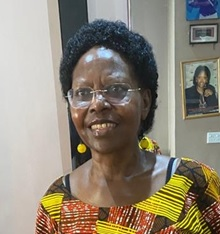 | Parents I was deeply happy that I had been admitted in my school of first choice. My Father had a letter which he had to share with the Head Mistress. Dad introduced his family and handed her my proof of scholarship from the Western Region which I had won. Miss Warren received us warmly and congratulated me upon this achievement. I could see my Dad beam with pride.
|
| Geraldine Katumba | |
|---|---|
Home and Culture Joining the school, I came with this culture of kneeling down to greet the elders, and when I knelt for Miss Bilibonwa who was our House mistress, she asked me not to do it again as that was not the way of greeting in GHS, so it stopped then. Coming from a rural area where my parents had trained me very well in any house chores and gardening, I was good at any housework I was given. In fact, I tried to help and teach the town girls how to peel matooke and do the house chores.
|
| Monica Mubeezi | |
|---|---|
| 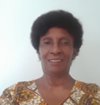 | Influence Gayaza greatly influenced my development as a "girl" by making me more independent, motivating me to aspire for higher achievements in life, and NEVER to give up! I am proud to be an old girl of that great school!
|
| Milly Musisi | |
|---|---|
Memories I cannot forget when we had matching sessions, practicing for a parade to welcome the President of Uganda then Idi Amin. Parading ourselves at Nakivubo Stadium like soldiers in the hot sun has never left my memory and I swore never to become a soldier.
|
| Winnie Omara | |
|---|---|
Firsts I was eager to begin studying at my dream school, but I never thought I would arrive at the main gate of Gayaza as I had to complete the day's journey on foot (futshubishi) and I must have been the last to arrive. However, the honour of dining with Miss Warren Sheila in her home for my first supper in Gayaza remains a wonderful memory for me. It was my first time speaking with a white person one-on-one.
|
| Barbara Rutare | |
|---|---|
Freedom I just could not wait for my father to come home from work so that I could commence my ride to freedom…. It did not take long for my dream of freedom to be shattered. There I was sharing a decker and a cubical to mention but a few of the things that threw my dreams through the window! I was not free after all- everything was programmed and deviation from the norm had consequences.
|
| Flavia Walukamba | |
|---|---|
Never Give up! Every successful person has a painful story, so never give up. A school bell that sounds like a disturbance at 8:am also sounds interesting at 2 pm... it is just a matter of time, so Don't envy anyone. Not everyone walking fast has an appointment. Some have running stomachs!... Don't try to compare yourself to others.... All animals that exist, were in Noah's ark. A snail is one of those animals..... Never look down on yourself, keep looking up. Remember that Broken crayons still color. Keep on pushing, you never can tell how close You are to Your Goal.
|
| Gladys Kalibala | |
|---|---|
Confidence Being accepted at GHS in 1974 was a big deal for me and my family as no one in our entire family had ever been to "the school". This was the source of the confidence that has carried me throughout my life.
|
| Florence Kutesa | |
|---|---|
Lasting Impressions I had my first encounter with a Muzungu (a white person) three days after reporting to “The School”. I met Miss S Warren (MHSRIP), just near the Chapel, who greeted me: “How are you, Miss?”. I happily responded with confidence: “I am fine, thank you. How are you madam?”. Oh my God, she shouted back: “I am not a madam. I do not sell tomatoes in the market-...". Apparently, "Madam" is used when you do not know the person. Scary, but unforgettable! Since then, I am very selective in the “terms” or “words” I use in my communication―
|
| Elizabeth Mpaata | |
|---|---|
Privilege A- level in Gayaza was a special time for me. Getting the opportunity to put on that green skirt was a great achievement. HSC at Gayaza was special time. You move to a room shared by two people or sometimes got a single room if you were a prefect. I was the house prefect for Kennedy House. This pushed you to work hard because prefects were never expected to fail! I remember us walking on the pavements and the O level students had to make way for the HSCs to pass! The rest for seniority was obvious and expected. This groomed us to respect social order.
|
| Irene Nafuna | |
|---|---|
Routine Gayaza High School (GHS) ushered in a totally new world to me and shaped my future. I am forever grateful. The daily routine involved aspects of time management, housework, assembly, morning prayers in the chapel, day classes, eating breaks, sports time, night preps, and lights-off to sleep. Weekends offered leisure time including movies, open dance, drama, visitation days and socials for S1, S4, S5, and S6 Students.
|
| Joy Nsubuga | |
|---|---|
Branding I thank God that he has given me a husband, Solomon and my daughters Diana, Linda, and Phiona (and my sons Patrick and Emmanuel) as a field for me to show what I learnt from that highly esteemed school. They did not attend Gayaza but they see the fruits of the labour of those awesome teachers, house mothers and staff of GJS and GHS in whose hands I was placed to be nurtured, guided, moulded, and mentored.
|
| Sarah Simwogerere | |
|---|---|
| 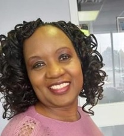 | Community I was one of a small group of Ugandan friends who founded 'Uganda Martyrs United Church of Canada' in Toronto. The church is in its 31st years of existence…. It has nurtured, our children to become very proud "Ugandan/Canadian citizens, creating a "sense of belonging" in a country where racism towards black folks could be subtle, yet very real and painful. |
| Betty Makanga | |
|---|---|
| 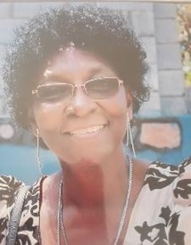 |
Grounding Gayaza High School was the Chinese bamboo root system I needed before shooting out to meet the world. A root system that takes five years to develop in order to support the twenty-five-metre plant that is called the Chinese bamboo. The enabler I needed to pursue my childhood dream of becoming an Engineer. It has served me well as a maama musumba/ma moruti/padre’s wife/ma mfundisi; a calling that has given me the opportunity to live and work with different groups of people, comfortable in the leadership role that comes with the territory.
|
| Sophia Mukasa | |
|---|---|
| 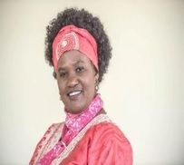 | `
Career A lawyer by profession and a public health practitioner by career and training. Her personal mission is to meaningfully contribute to the process of restoring hope, improving the quality of life of those infected and affected by HIV and see the end of AIDS through attaining equity, equality, and sustainable human development. |
| Eva Mutawe | |
|---|---|
Patronage Under the patronage of Ms Cutler, our Physical Education (PE) teacher for all our GHS life of up to 6 years; the GHS motto was and is magical. I belonged to the Table Tennis (TT) club of champions of GHS 74. Our Ms Cutler wholeheartedly believed in us, determinedly sharpened our TT skills, pushed us hard... We stood tall and fearless in front of our competitors from schools such as Mt. St.Mary's College Namagunga- regardless of the outcome of the Table Tennis games.
|
| Magaret Muwaya | |
|---|---|
Encouragement I loved Mathematics and the teachers were very supportive. I cannot forget Mr. Mulinya my teacher in S.1 and Miss Queen in S.4. who encouraged me and gave me confidence in Mathematics. In S.3 I was assigned to assist the caterer at the time Mrs. Sebaduka with her books and that was my morning work. |
| Eseza Okunga | |
|---|---|
| 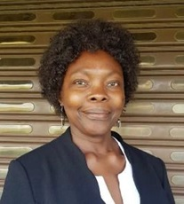 | Principles I left GHS rather abruptly in February 1977, some days into the first term of our Senior IV (S4 or O-Level) year…… I never ever forgot my classmates and the school that moulded my character. Even as I settled in a new school in Kenya, I maintained the principles that Gayaza High School instilled in me - honesty, integrity, and passion in all my endeavour
|
| Eve Odonga | |
|---|---|
Welcome Party... Arriving at the gates of the school I had always dreamt of, I was surprised at the large welcome reception perched excitedly along either side of the driveway (is it still that classic orange - yellow hue I wonder?). Halfway down the marram road, I began to notice the little sniggers, the snide remarks and the curious, not altogether friendly stares… Was it a welcome party after all, I vaguely wondered? |
| Jennifer Sentamu | |
|---|---|
| 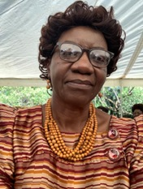 | Spirituality I’m very thankful to God that GHS awakened the Christian in me. Just like many of us, I did get born again but for some reason, fell out shortly after. But the seed was planted. God grew the seed and it has flourished into a beautiful plant. He continues to prune, trim and add fertilizer and I’m serving Him in whatever area he guides me to.
|
| Lillian Tibatemwa | |
|---|---|
Big Sisters - to remember Gayaza - is to remember my sister Cissy, my childhood friend who I cannot talk about without tears in my eyes….. Cissy was known for speaking Lusoga to whoever spoke Luganda to her – and I followed suit… – when I first walked through the gate into Gayaza High School in 1974, I was received by smiling Senior 2 students. Alot of comfort came from the fact that soon, I would see my sister Cissy walk towards me and my parents. And she did!! |
| Lovinca Matovu | |
|---|---|
| 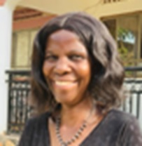 | End of Term What I cannot forget is the chapel time at the end of term. This is when the 1st to the 6th student of all streams were recognized. The Gayaza family.
|
| Evelyn Nkalubo | |
|---|---|
Cross Roads My lifelong dream was to become a doctor, to walk the halls of Mulago hospital with a stethoscope around my neck, as patients called out, "Musawo/Dr." But, to my surprise, I was placed in an Arts combination.... I sought counsel from the Head Mistress, Ms. Sheila Warren When I returned to her with my decision to pursue the Arts, her face lit up with a rare, full smile. She treated me to a cup of tea, and her congratulations for making a wise choice echoed in my ears. It took time for me to fully appreciate my decision, but over the years, I have never regretted it. |
| Rosette Kase | |
|---|---|
 |
Life I arrived in the USA on July 4th 1978 and for the last 45 years, I have lived , studied and worked in a human services field for the government of the state I have lived in for the last 38 years until I was finally eligible to retire on December 31 2017! Happily I am living out my days doing things I enjoy: pickleball, sewing, reading , hiking , travel to new places and visiting family and friends and most of all spending time with my three grandchildren bestowed on to me by my two lovely daughters
|
| Diana Mande | |
|---|---|
Perseverence I am very proud to be an old girl of Gayaza. Our Motto 'never give up' has made me persevere through challenges. I have managed to raise my 2 children as a single mother. The education, moral values and Christian background I attained in GHS has enabled me to get jobs; and a good member of society.
|
| Judy Senoga | |
|---|---|
Guiding Light You are a child of the Universe no less than the trees and the stars, you have a right to be here.
And whether or not it's clear to you, no doubt, the world is unfolding as it should. Therefore be at peace with God whatever you conceive Him to be Be cheerful, strive to be happy! |
| Estella Muyinda | |
|---|---|
| 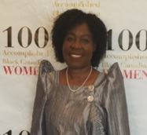 | Mischief There is some mischief I got into by myself every Sunday. I would go to Kabanyolo farm, without permission, to water flowers and plants that were in the horticultural structure. One day as I returned from my escapade, using the gap in the hedge near the small gate to re-enter the school, I saw Ms. Cutler our physical education /gym teacher walking towards where I was squatting. Hyde, her dog found me. She sniffed at me, I think she understood because she stood still and did not bark at me. Unfortunately, Hyde refused to respond to Ms. Cutler’s call. This led Ms. Cutler to order me to come out of the hedge..... |
| Victoria Kasagga | |
|---|---|
Calmness Calmeness and lack of heat and haste indicate fine qualities (unknown)
|
| Nightingale Rukuba | |
|---|---|
Managing as an Outsider When I was admitted into GHS to pursue my A levels, I was ecstatic. My excitement waned and anxiety set in when I realised that I was an outsider. The girls were friendly so I continued to show up, say hello and explain a bit about myself and eventually I made friends. My breakthrough came when I joined the body of student leaders led by Betty Makanga. This gave me the confidence and today I work and live in different countries and regions of the world, confident and with no worry about change. |
| Dorothy Migadde | |
|---|---|
Artist Among Us As an all round up artist, her works include illustration, Painting in all media, portraiture, interior décor, fabrications in wood and others. Her inspiration comes from her mother, different local folk tales and the environment around her.
|
| Sarah Nsubuga | |
|---|---|
Sports at GHS At GHS, we had a good time all together and became friends. I was in S.1.E. I liked the P.E lessons very much. Ms. Cutler liked the way I followed her movements and nicknamed me “long legs”. I used to play table tennis well with Khamisa Baya, lawn tennis, Badminton, Netball, to mention but a few. I became a member of the school Netball team which competed with King’s College Buddo and Trinity College Nabbingo. |
| Stella Babiiha | |
|---|---|
| 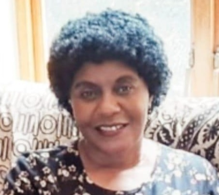 | Life-long learning It is important to have life-long learning as this will enrich you and simultaneously add value to society
|
| Betty Kadoko | |
|---|---|
| 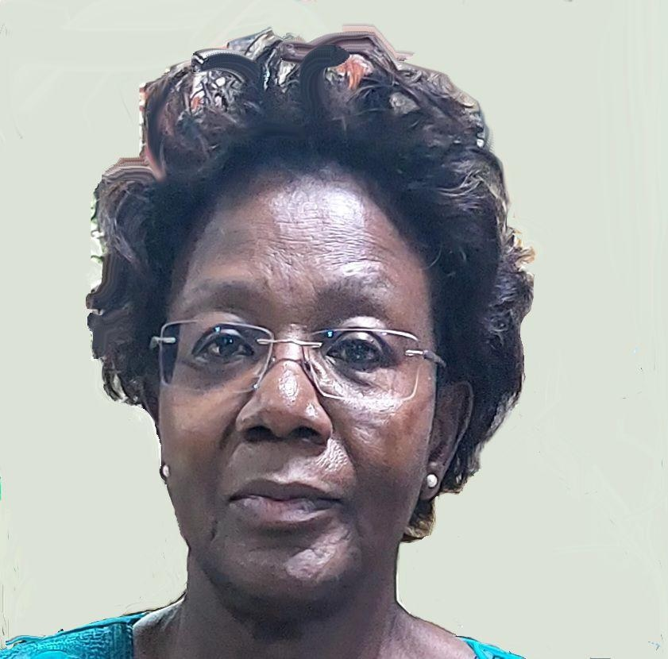 | Love I am only one; but still I am one I cannot do everything, but still I can do something; I will not refuse to do something I can do (Helen Keller) |
| Norah Kasirye | |
|---|---|
Being made to feel special An enduring memory of GHS (Senior) was “the talk” with Ms. Warren in my first week. During” the talk” Ms. Warren asked me what I wanted to be eventually, I replied, “a medical doctor”. I nearly fell out of the chair when Ms. Warren said, “like your sister Samalie” I was amazed and flattered. I marvelled at her knowing such a detail about my sister who had been in a large class and had completed A’ Levels at GHS in 1968. I left the meeting feeling very special.
|
| Rose Kayita | |
|---|---|
Happiness Be happy with who you are. Being happy doesn’t mean everything is perfect but that you have decided to look beyond the imperfections. |
| Janet Kayita | |
|---|---|
| 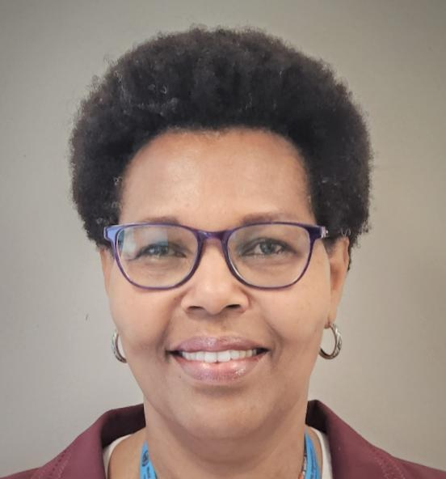 | Inspiration Find inspiration in everyday moments, be yourself.
|
| Robina Nantamu | |
|---|---|
Joy The Joy of the Lord is my strength (Nehemiah 8:10)
|
| Jennifer Mugisha | |
|---|---|
| 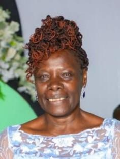 | Vivacious
Let your life be a vivacious poetry of love, compassion, kindness and beauty. (Debashish Mridha) |
| Joyce Achen | |
|---|---|
Biology (an extract fro a beautiful Poem) Our dear Biology Which art in our lives Hallowed be thy nomenclature...... Give us this day our daily metabolic needs Forgive us our destruction of life in dissection As we forgive parasites .....(Joyce Achen) |
| Ida Namuleme | |
|---|---|
To be and not to seem The more we mature inwardly the simpler greater truths appear to us; for it is from heaven that we gain understanding (Thomas a Kempis) |
| Winnifred Odoi | |
|---|---|
| 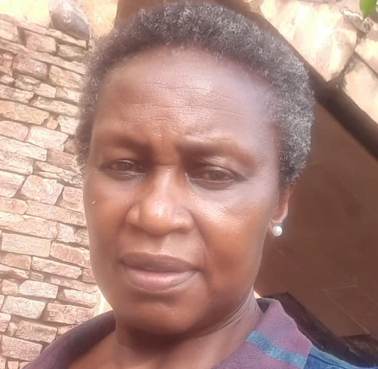 | Revelation When you were born you cried and the world rejoiced. Live your life in such a manner that when you die the world cries and you rejoice. (Old Indian saying) |
| Pheobe Badaru | |
|---|---|
 |
Aim High Aim at the sun, and you may not reach it; but your arrow will fly far higher than if you aimed at an object on a level with yourself" (J Hawes) |
| Samalie Walabyeki | |
|---|---|
Music and Mischief With my fellow Inspirations, Estella Muyinda & Norah Kasirye, I enjoyed the privilege of creating such beautiful musical harmonies, I still find myself making a ‘joyful noise’ to our favorite tunes! Partners-in-mischief, Judith Ssenoga and Sophia Mukasa joined us on many boarding school adventures. Consequently, we became familiar with the punishment tree and the Chapel’s unshaded exterior, but the cheekiness was worth it!
|
| Freda Mukulu | |
|---|---|
Respect One of the things I liked about the school was the emphasis on respect for persons. We were taught not to use a teacher’s name without their title. This way we cultivated respect for the teachers. Our teachers also respected us. They were not giants up there, leaving us the students to be mere nobodies, No! We related healthy with them.
|
Designed and Created by Dr Betty Kibirige |